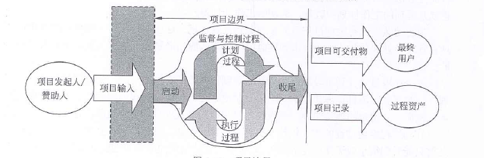

文章目录
项目定义
- 项目是为了达到特定的目的，使用一定的资源，在确定的期间内，为特定发起人提供独特的产品、服务或成果而进行的一系列相互关联的活动的集合。
项目目标
项目目标的概念
- 项目目标包括成果性目标和约束性目标
- 项目的约束性目标也叫管理性目标，项目的成果性目标有时也简称为项目目标。项目成果性目标指通过项目开发出的满足客户要求的产品、系统、服务或成功。
项目目标的特性
- 1、项目的目标有不同的优先级
- 2、项目目标具有层次性
项目特点
- 1、临时性
- 每一个项目都有一个明确的开始时间和结束时间，临时性也指项目是一次性的。
- 2、独特性
- 项目要提供某一独特产品，提供独特的服务或成果，因此“没有完全一样的项目”
- 3、渐进明细
- 项目的成果性目标是逐步完成的。项目的产品、成果或服务事先不可见，在项目前期只能粗略的进行项目定义，随着项目的进行才能逐渐明朗、完善和精确。
信息系统集成项目的特点
- 所谓的信息系统集成，就是从客户和用户的需求出发，将硬件、系统软件、工具软件、网络、数据库、应用软件或者云计算提供的服务以及相关的支撑环境集成为实用的信息系统过程。在这个过程中，应根据需求，开发相应的软件和硬件，并把他们集成为一个系统。
- 信息系统集成项目的产品是满足需求、支持用户业务的信息系统
- 信息系统集成项目建设的指导方法是“总体规划、分布实施”
- 特点：
- 1、信息系统集成项目要以满足客户和用户的需求为根本出发点
- 2、客户和用户的需求常常不够明确，复杂多变，由此应加强需求变更管理以控制风险
- 3、系统集成不是简单选择最好的产品的行为，而是要选择（或开发）最适合用户的需求和投资规模的产品、技术和服务的活动集合
- 4、高技术与高技术的集成。
- 5、系统工程。系统集成包含技术，管理和商务等方面，是一项综合性的系统工程，需要相关的各方面足够重视，必要时应“一把手”挂帅，并且多方密切协作
- 6、项目团队的成员年轻，流动率高。因此对企业的管理技术水平和项目经理的领导艺术水平要求较高。
- 7、强调沟通的重要性。信息系统开发需要成员间的协作，也可以说是沟通的产物。
信息系统项目生命周期模型
- 1、瀑布模型
- 又叫预测型生命周期，完全计划驱动型什么周期。在这个模型里，在项目生命周期的尽早时间，要确定项目范围及交付此范围所需的时间和成本。
- 一下情况优先选择这种生命周期： 在项目需求明确、充分了解拟交付的产品、有厚实的行业实践基础、或者整批一次性交付产品有利于干系人。
- 特点：
- 1、从上一项开发活动接受其成果作为本次活动的输入
- 2、利用这一输入，实施本次活动应完成的工作内容
- 3、给出本次活动的工作成果，作为输出传给一下项开发活动
- 4、对本次活动的实施工作成果进行评审。若其工作成果得到确认，则继续进行下一项活动，或则返回前一项，甚至更前项的活动
- 2、迭代模型
- 在大多数传统的生命周期中，阶段是以其中的主要活动命名：需求分析、设计、编码、测试。传统的软件开发工作大部分强调过程的串行执行，也就是一个活动需要在前一个活动完成后才开始，从而形成一个过程串。
- RUP 软件统一过程是一种“过程方法”，他就是迭代模型的一种
- 3、敏捷方法
- 是一种以人为核心、迭代、循序渐进的开发方法，适用于一开始并没有或不能完整地确定出需求和范围的项目，或者需要应对快速变化的环境，或者需求和范围难以事先确定，或者能够以有利于干系人的方式定义较小的增量改进
- 敏捷方法，也叫适应性型生命周期，或者变更驱动方法
- 4、V模型
- V模型的左边下降的是开发过程各阶段，与此相对应的是右边上升的部分，即各测试过程的各个阶段。
- 5、原型化模型
- 是为了弥补瀑布模型的不足而产生的。
- 原型化模型的第一步是建造一个快速原型，实现客户或未来的用户与系统的交互，经过和用户针对原型的讨论和交流，弄清需求以便真正把握用户需要的软件产品是什么样子的。
- 6、螺旋模型
- 螺旋模型是一个演化软件的过程模型，将原型实现的迭代特征与线性顺序（瀑布）模型中控制的和系统化的方面结合起来。
- 螺旋模型强调了风险分析，特别适用于庞大而复杂的、搞风险的系统
-
项目过程
- PDCA循环
- 项目管理监控过程与PDCA进行交互
项目管理过程组
启动过程组
- 